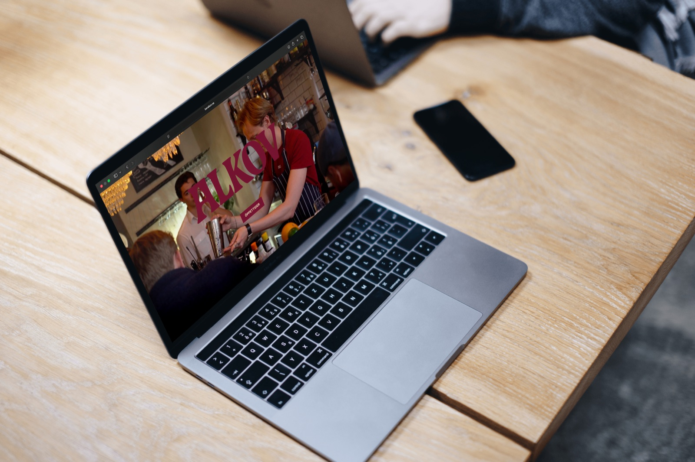

Simon Strandh
UX / UI Designer
Gothenburg, Sweden
"My love for design extends to pretty much everything around me -from vintage fashion to automotive design. I’m endlessly inspired by things that balance strong aesthetics with genuine character."
Simon Strandh
UI / UX designer
Available for work

May 2026
A dining experience is about far more than just food and drink. How do you capture that sense of place and atmosphere on a website?
Apr 2026
How many stops are left until you get off your bus or tram? What do you do if you can't see the vehicle's destination display, or if it isn't working?
Aug 2026 - Oct 2026
A design system is about far more than just consistent buttons; it creates a shared visual language across an entire platform. How do you build a responsive system in Figma that ensures designs not only scale seamlessly from mobile to desktop, but also behave consistently across every page?
UX / UI Designer
Gothenburg, Sweden
"My love for design extends to pretty much everything around me -from vintage fashion to automotive design. I’m endlessly inspired by things that balance strong aesthetics with genuine character."
My interest in design has been there for as long as I can remember. I have a particular soft spot for vintage and second-hand, whether it’s fashion or interior design. To me, a pair of jeans is so much more than just a piece of clothing. They carry a history and a specific feeling.
It’s precisely the combination of aesthetics and my drive to create real value that made UX design the obvious choice for me.
Just as a sweater should be both beautiful to look at and comfortable to wear, I believe a digital product must be both visually appealing and effortless to use
My greatest strengths lie in my technical curiosity and strong interpersonal skills. I’m a solution-oriented doer. When faced with a challenge I don’t know how to solve yet, I take the initiative to learn whatever tools or methods are required.
I thrive in collaborative environments and consider myself a grounded, ego-free team player who fosters a positive team culture.
Technically, I’m highly driven and genuinely enjoy working in tools like Figma. I'm motivated by turning theoretical ideas and abstract problems into tangible, visual solutions
Have a project in mind, or just want to say hi? Drop me a message and I'll usually get back to you within 24 hours.
simon.a.strandh@gmail.com
Simon Strandh